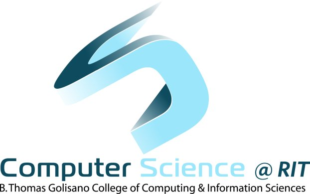
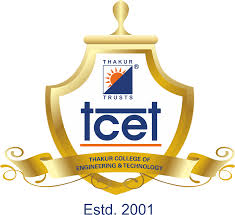

MASTER OF SCIENCE IN COMPUTER SCIENCE, ROCHESTER INSTITUTE OF TECHNOLOGY, DECEMBER 2021(EXPECTED) 
SQL,
MongoDB, R and
PythonJava,
Wireshark, VMwareMongoDB certification – March 2019 – Udemy Certified
BACHELOR OF ENGINEERING (INFORMATION TECHNOLOGY), THAKUR COLLEGE OF ENGG. & TECH., MUMBAI, JUNE 2014

Android Dev Kit
as a platform and SQLite as databaseHTML5,
CSS3, Bootstarp4,
jQuery, SQL, JSP,
Servlet, MySQLHTML, CSS,
JSP,Servlet,SQL and
Apache TomcatAakash Android Application Programming – Feb,2013 – held in Thakur
College of Engineering & Tech.Computer Application – Mar-2013 – Raj Software TechnologyJava Certification- Oct-2013 – Raj Software TechnologyShort Length Paper on
Android Application for Education System in
International Conference and workshop on Advance Computing-2014, held at Thakur
College of Engg. & Tech, Mumbai.© Copyright 2020 Saurabh Shukla All rights reserved